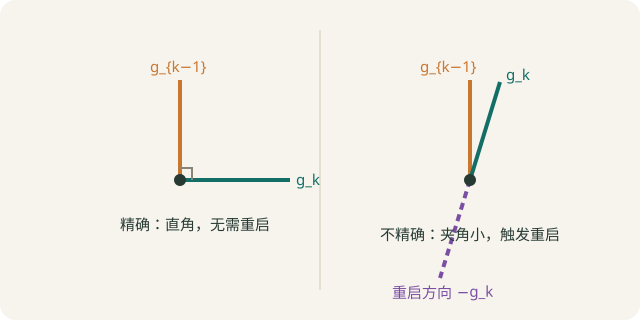

5.2.3 二次终止与重启：何时丢弃旧方向
共轭梯度在正定二次目标上第 n 步到达精确解，但一般函数没有这个性质。把 β 置零就退化为最速下降，等于丢弃累积的共轭信息；定期重启或按 Powell 判据重启，是在“记忆”与“安全下降”之间做权衡。
二次终止为何失效
回顾 5.1：正定二次目标上，精确线搜索的共轭梯度法第 n 步就给出 x*。这一结论依赖于 g_k 满足的一系列正交关系，而这些关系源于 Q 的常数性。一般目标 f 的 Hessian 随 x 变化，二次模型只在局部成立。
迭代 n 步后，累积的方向不再关于局部曲率共轭，继续沿用它们可能让 p_k=−g_k+β_k p_{k−1} 不再是下降方向。可以这样理解：共轭性是二次模型的性质，一旦模型失配，被“记住”的旧方向就成了噪声。
每 n+1 步定期重启
最简单的处理是周期性重启：每 n+1 次迭代把 β 置零一次，即令 p_k=−g_k。于是重启点退化为最速下降方向，之后重新累积新的共轭信息。若目标在解附近近似二次且 Hessian 在 n 步内变化不大，这种重启能恢复接近二次的快速终止。
重启也是一种保险：它保证至少每 n+1 步有一次严格下降方向，从而避免 β 越滚越大导致的停滞。代价是主动丢弃了可能仍然有效的历史信息。
Powell 重启判据
定期重启会浪费信息。Powell 提出用相邻梯度的正交程度判断共轭性是否被破坏：当下列比值超过阈值 ν（典型 ν=0.1）时重启。在二次问题、精确线搜索下有 g_kᵀg_{k−1}=0，比值应为零；比值变大正是非二次干扰的信号。
重启时 β_k 被置零，方向回到 p_k=−g_k，于是 g_kᵀp_k=−‖g_k‖²<0 严格成立。重启以放弃历史信息为代价，换取无条件下降。

二维算例
沿用 5.2.1 与 5.2.2 的二次问题。第一步精确，第二步取 c=3/5。此时 g_1=(42/73,−30/73)，g_2=(84/365,−60/365)。
计算 Powell 比值：g_2ᵀg_1=5328/26645，‖g_2‖²=10656/133225，两者相除得 5/2=2.5，远大于 ν=0.1，于是判据触发重启，β_2 被置零。对照 c=1 的精确步：g_2=0（已到 x*），无需重启。该数值由本页 Python 用精确分数断言核验。
重启的取舍与边界
重启把信息换成安全：定期重启实现简单但可能过频，Powell 判据更省迭代但每步多一次内积判断。两者都不能保证一般非凸问题收敛到全局最优，只能保证下降与局部收敛。
重启只处理“方向变坏”，不改变线搜索本身。若线搜索严重不精确，即使重启也可能步长过小、进展缓慢。因此实际代码需把重启与满足 Wolfe 条件的线搜索（第三章）配合使用。本页程序只在一个固定二维二次问题上核对判据数值，不是通用求解器。
交互：Powell 比值随步长精度变化
固定阈值 ν=0.1，拖动滑块改变第二步的伸缩因子 c。c=1 为精确步，比值接近 0；c 偏离 1 后比值迅速上升并越过阈值，触发重启。该计算为教学示意，不代表一般问题的重启次数。
实时模型计算
Python：Powell 比值的分数断言
下面的程序只依赖标准库，重放两步并将准确步与不精确步对比，断言不精确步的 Powell 比值恰为 5/2。它只处理一个固定二维二次问题。
"""Fletcher-Reeves with the Powell restart test on a 2x2 quadratic."""
from fractions import Fraction
Q = ((3, 1), (1, 3))
b = (5, 7)
def matvec(M, v):
return (M[0][0]*v[0] + M[0][1]*v[1], M[1][0]*v[0] + M[1][1]*v[1])
def dot(u, v):
return u[0]*v[0] + u[1]*v[1]
def gradient(x):
q = matvec(Q, x)
return (q[0] - b[0], q[1] - b[1])
def substep(x, p, c):
alpha = -dot(gradient(x), p) / dot(p, matvec(Q, p))
return (x[0] + c*alpha*p[0], x[1] + c*alpha*p[1])
def powell_ratio(g_prev, g_now):
return abs(dot(g_now, g_prev)) / dot(g_now, g_now)
if __name__ == "__main__":
x = (Fraction(0), Fraction(0))
g0 = gradient(x)
p0 = (-g0[0], -g0[1])
x1 = substep(x, p0, Fraction(1))
g1 = gradient(x1)
fr1 = dot(g1, g1) / dot(g0, g0)
p1 = (-g1[0] + fr1*p0[0], -g1[1] + fr1*p0[1])
x_exact = substep(x1, p1, Fraction(1))
assert gradient(x_exact) == (Fraction(0), Fraction(0))
x2 = substep(x1, p1, Fraction(3, 5))
g2 = gradient(x2)
ratio = powell_ratio(g1, g2)
assert ratio == Fraction(5, 2)
restart = ratio >= Fraction(1, 10)
assert dot(g2, (-g2[0], -g2[1])) < 0
print("exact step: g =", gradient(x_exact), "| powell ratio =", ratio, "restart:", restart)